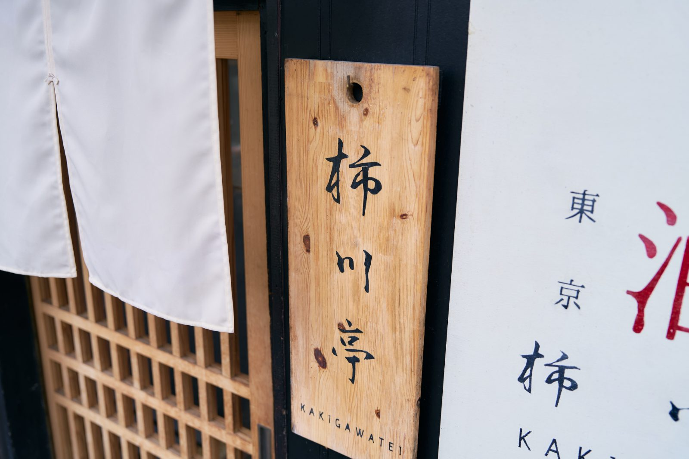
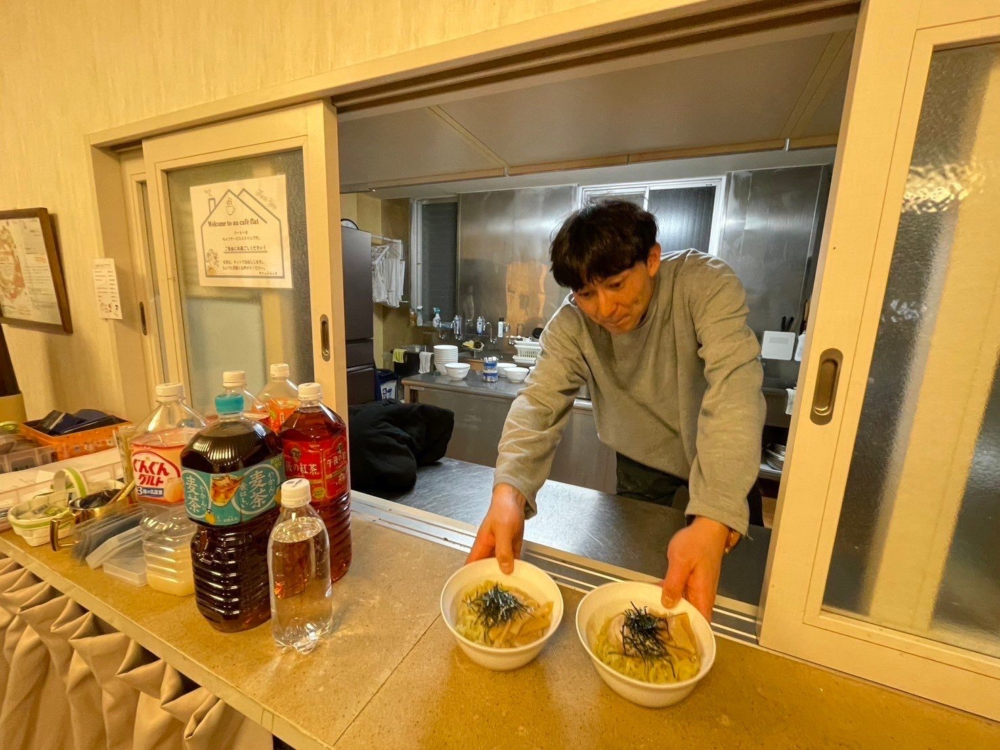
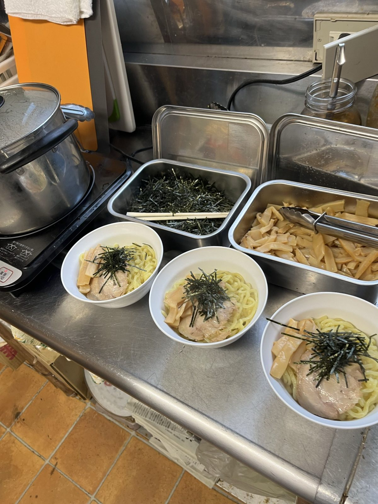
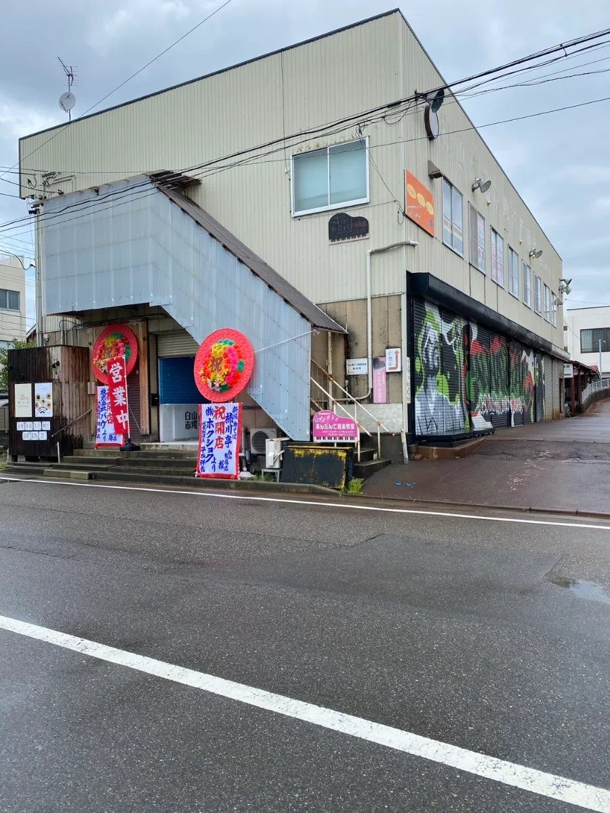
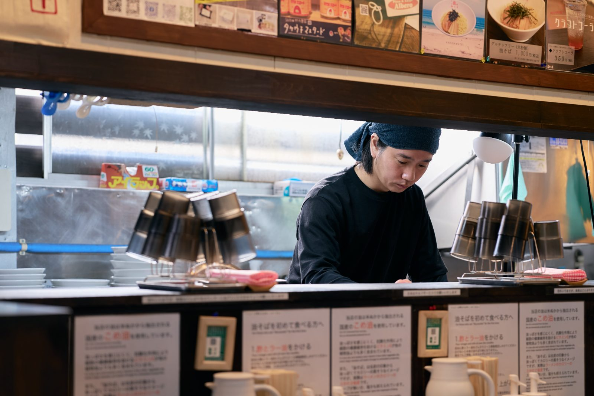
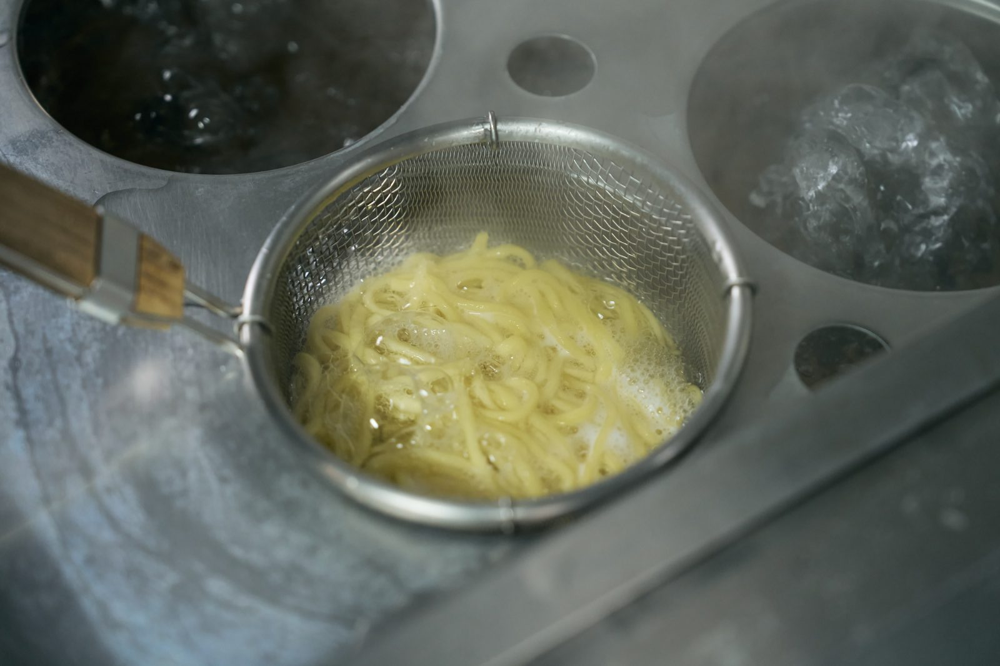

Add oil for our town.
新潟・長岡発の油そば専門店「柿川亭」を、新潟・宮城・福島で6店舗。
BRAND STATEMENT
Add oil for
our town.
この街に、情熱を。
街の色が、少しずつ褪せていく。
夢を語る場所が、ひとつ、またひとつと減っていく。
私たちが注ぐのは、ただの油ではありません。
止まったものを、もう一度動かすための熱です。
誰かが先に漕ぎ出せば、
その背中を見た誰かも、漕ぎ出す。
挑戦が応援を呼び、応援がまた挑戦を生む。
この街が、世界を動かす熱源になるまで。
私たちは、注ぎ続けます。
OUR NAME
「バウ」とは、船首。船の頭のことです。
ボートを漕ぐとき、人は進行方向に背を向けて座ります。
オールをかくたび、舟は自分の背中側へ進んでいく。
この先に何があるのかは、誰にも分かりません。
先の読めない時代を進むことも、これとよく似ています。
だから私たちは、北極星を掲げます。
夢や目標という、たったひとつの目印。
それだけを頼りに、ただ懸命に漕ぐ。
見えるのは、左右からあらわれてくる景色と、
遠ざかっていく、これまで通ってきた道のり。
その眺めを楽しみながら、進んでいこう。
柿川という小さな川から漕ぎ出したこの舟が、
やがて信濃川へ、そして大海原へ。
そんな道のりでありたいと、この名前をつけました。
PHILOSOPHY
MISSION
使命
Add oil for our town
〜街に情熱を注ぎ、応援し、加速させる〜
街に情熱という燃料を注ぎ、挑戦を支える「潤滑油」になる。
（情熱＝燃料、応援＝加油、加速＝潤滑油）
VISION
創りたい未来
挑戦と応援が循環し、街が世界を動かす「熱源」になる
VALUE
行動指針
頭文字が B・A・U＝社名になっています
B
Beginning ── まず、自分から
受け取る前に、まず自分から。見返りを求めず、最初の一滴として「ペイフォワード」のサイクルを回し始める。
A
Altruism ── 「利他」をエネルギーにする
誰かの喜びを、自分の燃料に。仲間の成功や街の夢を全力で応援し面白がることが、自分たちを動かす最大のエネルギーになる。
U
Uplift ── 可能性を引き上げろ
挑戦する人の背中を押し、才能を解き放つ。街の挑戦をなめらかに加速させ、共に高みを目指す。
STANCE
Stay hot ,
Stay kind
〜熱くあれ。優しくあれ。〜
自ら燃え続ける「熱源」であり、その熱は、常に誰かのためである。
情熱（Hot）を持ちながら、誰よりも優しく(Kind)あり続けよう。
油そばは熱いうちが一番美味しい。
決して冷めることのない情熱、そして一口食べた瞬間に心まで温まる一杯でありましょう。
BUSINESS
01
新潟・宮城・福島に、6店舗。
直営3店舗と、フランチャイズ3店舗。
2030年までに、フランチャイズで累計50店舗を目指します。

02
柿川亭 通販事業部として、長岡の一杯を全国へ。
デリバリーには専用の商品を開発し、店の外でも同じ味を届けます。
03
子ども食堂への継続的な支援。油そばと、施設・設備を提供しています。
小中学校でのキャリア教育。
ソフトテニス教室による、地域の場づくり。
店で得たものを、街に返していきます。


長岡市内の子ども食堂に、油そばと、施設・設備を提供しています。
SHOPS
全6店
直営店
フランチャイズ店

新潟県新潟市中央区白山浦2-180-3
[日・月] 11:00-19:00 ／ [火・水・金・土] 11:00-14:00・17:00-20:00 ／ [木] 16:00-20:00 不定休
RECRUIT


COMPANY